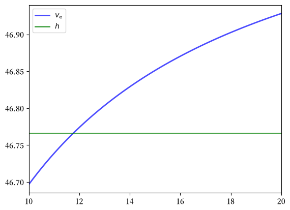
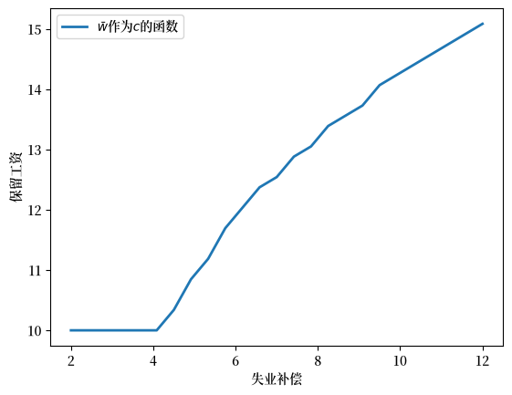
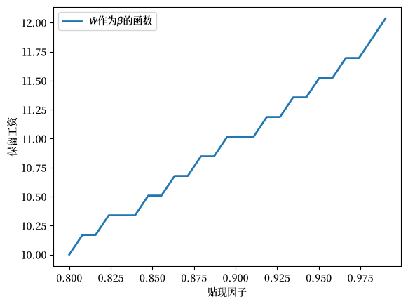
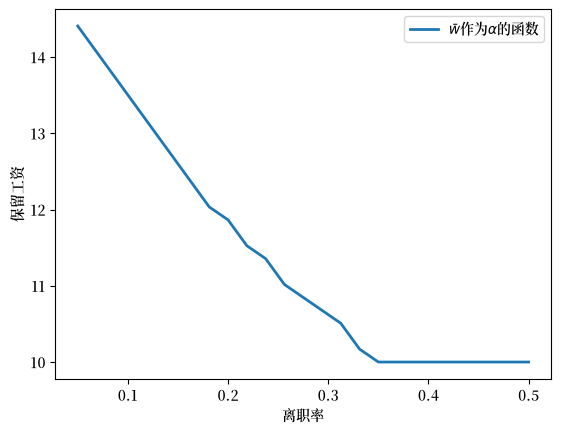

54. 工作搜寻 II：搜寻与离职#
GPU
本讲座是在配有GPU的机器上构建的——不过没有GPU也可以运行。
Google Colab 提供带GPU的免费套餐，使用方法如下：
点击右上角的”播放”图标
选择 Colab
将运行时环境设置为包含GPU
除了Anaconda中包含的内容外，本讲座还需要以下库：
!pip install quantecon jax myst-nb
54.1. 概述#
在之前的讲座中，我们研究了McCall工作搜寻模型 [McCall, 1970]作为理解失业和劳动者决策的一种方式。
在之前的模型中，我们假设工作是永久性的，这不太符合现实。
本讲座将通过引入离职来扩展该模型。
一旦引入离职，个体会认为：
失去工作是一种资本损失，并且
一段失业期是对寻找一份可接受工作的投资
另一个小的补充是，我们将引入一个效用函数，使劳动者的偏好更加复杂一些。
我们需要以下导入：
import matplotlib.pyplot as plt
import matplotlib as mpl
FONTPATH = "fonts/SourceHanSerifSC-SemiBold.otf"
mpl.font_manager.fontManager.addfont(FONTPATH)
plt.rcParams['font.family'] = ['Source Han Serif SC']
import numpy as np
import jax
import jax.numpy as jnp
from typing import NamedTuple
from quantecon.distributions import BetaBinomial
from myst_nb import glue
54.2. 模型#
该模型与基础McCall工作搜寻模型类似。
它关注一个无限期生存的劳动者的生活，以及：
他或她（为节省一个字符，我们称”他”）在不同工资水平工作的机会
摧毁他当前工作的外生事件
他在失业期间的决策过程
劳动者可以处于两种状态之一：就业或失业。
他希望最大化：
在这个阶段，与基础模型的唯一区别是我们通过引入效用函数\(u\)增加了偏好的灵活性。
它满足\(u'> 0\)和\(u'' < 0\)。
工资报价\(\{ W_t \}\)是从一个共同分布\(q\)中独立同分布抽取的。
所有可能的工资值集合记为\(\mathbb W\)。
54.2.1. 时间安排和决策#
在每个时期开始时，个体可以是：
失业，或
在某个现有工资水平\(w\)就业。
如果当前以工资\(w\)就业，劳动者：
从当前工资中获得效用\(u(w)\)，并且
以某个（小的）概率\(\alpha\)被解雇，下一期变为失业。
如果当前失业，劳动者会收到随机工资报价\(W_t\)，并选择接受或拒绝。
如果他接受，则立即以工资\(W_t\)开始工作。
如果他拒绝，则获得失业补偿\(c\)。
然后过程重复。
备注
我们不允许在就业期间进行工作搜寻—这个主题将在后续讲座中讨论。
54.3. 求解模型#
我们在下文中省略时间下标，用撇号表示下一期的值。
令：
\(v_e(w)\)为进入当前时期时以工资\(w\)就业的劳动者的最大终身价值
\(v_u(w)\)为进入当前时期时失业并收到工资报价\(w\)的劳动者的最大终身价值。
这里，最大终身价值是指当劳动者在所有未来时间点都做出最优决策时目标函数(54.1)的值。
正如我们接下来将展示的，得到这些函数是求解该模型的关键。
54.3.1. 贝尔曼方程#
我们回忆一下，在最初的工作搜寻模型中，价值函数（在给定工资报价下失业的价值）满足一个贝尔曼方程。
这里，该函数同样满足一个非常相似的贝尔曼方程。
不同之处在于，接受的价值是\(v_e(w)\)，而不是\(w/(1-\beta)\)。
我们必须做出这个改变，因为工作不是永久性的。
接受工作使劳动者转为就业，因此获得回报\(v_e(w)\)，我们将在下面讨论这一点。
拒绝则导致失业补偿和明天的失业。
方程(54.2)表达了手中持有报价\(w\)而处于失业状态的价值，它是两个选项价值的最大值：接受或拒绝当前报价。
函数\(v_e\)也满足一个贝尔曼方程：
备注
这个方程与传统的贝尔曼方程不同，因为其中没有max运算。
之所以没有max，是因为一个就业中的个体没有选择余地。
尽管如此，为了与大多数文献保持一致，我们仍然将其称为贝尔曼方程。
方程(54.3)用以下内容表达了以工资\(w\)就业的价值：
当前报酬\(u(w)\)加上
考虑到被解雇概率\(\alpha\)后的贴现预期明日回报
正如我们将看到的，方程(54.3)和(54.2)提供了足够的信息来求解\(v_e\)和\(v_u\)。
一旦得到这两个函数，我们就能够做出最优选择。
54.3.2. 保留工资#
令
这是失业个体的继续价值——即拒绝当前报价并随后做出最优决策所对应的价值。
从(54.2)中可以看出，如果\(v_e(w) \geq h\)，失业个体会接受当前报价\(w\)。
这恰恰意味着接受的价值高于拒绝的价值。
函数\(v_e\)在\(w\)上是递增的，因为更高的当前工资永远不会使就业中的个体变差。
因此，我们可以将最优选择表达为：当且仅当\(w \geq \bar w\)时接受工资报价\(w\)， 其中保留工资\(\bar w\)是满足以下条件的第一个工资水平\(w \in \mathbb W\)：
54.4. 代码#
现在让我们基于两个贝尔曼方程(54.2)和(54.3)实现一个求解方法。
54.4.1. 设置#
默认效用函数是CRRA效用函数
def u(x, γ):
return (x**(1 - γ) - 1) / (1 - γ)
另外，这是一个基于Beta-二项分布的默认工资分布：
n = 60 # w的n个可能结果
w_default = jnp.linspace(10, 20, n) # 10到20之间的工资
a, b = 600, 400 # 形状参数
dist = BetaBinomial(n-1, a, b) # 分布
q_default = jnp.array(dist.pdf()) # 以JAX数组形式表示的概率
这是我们的带离职的McCall模型类。
class Model(NamedTuple):
α: float = 0.2 # 工作离职率
β: float = 0.98 # 贴现因子
γ: float = 2.0 # 效用参数（CRRA）
c: float = 6.0 # 失业补偿
w: jnp.ndarray = w_default # 工资结果空间
q: jnp.ndarray = q_default # 工资报价上的概率
54.4.2. 算子#
我们将采用与第一个工作搜寻讲座中类似的迭代方法来求解贝尔曼方程。
第一步，为了对贝尔曼方程进行迭代，我们为每个价值函数定义一个算子，共两个算子。
这些算子以当前的价值函数作为输入，并返回更新后的版本。
def T_u(model, v_u, v_e):
"""
应用失业贝尔曼更新规则，并返回v_u的新猜测值。
"""
α, β, γ, c, w, q = model
h = u(c, γ) + β * (v_u @ q)
v_u_new = jnp.maximum(v_e, h)
return v_u_new
def T_e(model, v_u, v_e):
"""
应用就业贝尔曼更新规则，并返回v_e的新猜测值。
"""
α, β, γ, c, w, q = model
v_e_new = u(w, γ) + β * ((1 - α) * v_e + α * (v_u @ q))
return v_e_new
54.4.3. 迭代#
现在我们编写一个迭代程序，更新数组对\(v_u\)，\(v_e\)直到收敛。
更准确地说，我们迭代直到连续的实现结果之间的差异小于某个小的容差水平。
def solve_full_model(
model,
tol: float = 1e-6,
max_iter: int = 1_000,
):
"""
通过迭代求解v_u和v_e两个价值函数。
"""
α, β, γ, c, w, q = model
i = 0
error = tol + 1
v_e = v_u = w / (1 - β)
while i < max_iter and error > tol:
v_u_next = T_u(model, v_u, v_e)
v_e_next = T_e(model, v_u, v_e)
error_u = jnp.max(jnp.abs(v_u_next - v_u))
error_e = jnp.max(jnp.abs(v_e_next - v_e))
error = jnp.max(jnp.array([error_u, error_e]))
v_u = v_u_next
v_e = v_e_next
i += 1
return v_u, v_e
54.4.4. 计算保留工资#
现在我们已经能够求解这两个价值函数了，让我们来研究一下保留工资。
回顾上面的内容，保留工资\(\bar w\)是满足\(v_e(w) \geq h\)的第一个\(w \in \mathbb W\)，其中\(h\)是(54.4)中定义的继续价值。
让我们比较\(v_e\)和\(h\)，看看它们是什么样子。
我们将使用上述代码中的默认参数化设置。
model = Model()
α, β, γ, c, w, q = model
v_u, v_e = solve_full_model(model)
h = u(c, γ) + β * (v_u @ q)
fig, ax = plt.subplots()
ax.plot(w, v_e, 'b-', lw=2, alpha=0.7, label='$v_e$')
ax.plot(w, [h] * len(w), 'g-', lw=2, alpha=0.7, label='$h$')
ax.set_xlim(min(w), max(w))
ax.legend()
plt.show()
findfont: Failed to find font weight normal, now using 600.
findfont: Failed to find font weight normal, now using 600.

价值\(v_e\)是递增的，因为更高的\(w\)在保持就业的条件下产生更高的工资流。
保留工资就是这两条线相交处的\(w\)值。
让我们明确计算这个保留工资：
def compute_reservation_wage_full(model):
"""
使用完整模型的解计算保留工资。
"""
α, β, γ, c, w, q = model
v_u, v_e = solve_full_model(model)
h = u(c, γ) + β * (v_u @ q)
# 找到第一个使v_e(w) >= h的w，若不存在则为+inf
accept = v_e >= h
i = jnp.argmax(accept) # 返回第一个接受的索引
w_bar = jnp.where(jnp.any(accept), w[i], jnp.inf)
return w_bar
w_bar_full = compute_reservation_wage_full(model)
print(f"保留工资（完整模型）：{w_bar_full:.4f}")
保留工资（完整模型）：11.8644
这个值似乎接近这两条线相交的位置。
54.5. 简化变换#
上述方法是有效的，但对两个向量值函数进行迭代在计算上代价高昂。
借助一些数学推导和一些脑力劳动，我们可以构造出一种效率高得多的求解方法。
（这个过程将类似于我们对普通McCall模型的第二次尝试，在那里我们把贝尔曼方程简化为一个关于未知标量值（而不是未知向量）的方程。）
首先，我们使用(54.4)中定义的继续价值\(h\)，将(54.2)写为
对两边取期望然后贴现，得到
将\(u(c)\)加到两边，并再次使用(54.4)，得到
这是一个关于继续价值的漂亮的标量方程，已经很有用了。
但我们还可以更进一步，即从上述方程中消去\(v_e\)。
54.5.1. 简化为单一方程#
第一步，我们对定义\(h\)的表达式（见(54.4)）进行重新整理，得到
利用这一点，(54.3)中给出的\(v_e\)的贝尔曼方程现在可以重写为
我们的下一步是求解(54.6)，将\(v_e\)表示为\(h\)的函数。
对(54.6)进行整理，得到
或者
求解\(v_e(w)\)，得到
将其代入(54.5)，得到
最后，我们得到了一个关于\(h\)的单一标量方程！
如果我们能求解出\(h\)，就能利用(54.7)轻松地恢复出\(v_e\)。
然后我们就有足够的信息来计算保留工资。
54.5.2. 求解贝尔曼方程#
为了求解(54.8)，我们使用如下迭代规则
从某个初始条件\(h_0\)开始。
（可以通过巴拿赫压缩映射定理证明(54.9)是收敛的。）
54.6. 实现#
为了实现对\(h\)的迭代，我们提供一个函数，实现从\(h_n\)到\(h_{n+1}\)的一次更新
def update_h(model, h):
" 对标量h进行一次更新。 "
α, β, γ, c, w, q = model
v_e = compute_v_e(model, h)
h_new = u(c, γ) + β * (jnp.maximum(v_e, h) @ q)
return h_new
此外，我们提供一个函数，根据(54.7)计算\(v_e\)。
def compute_v_e(model, h):
" 使用闭式表达式从h计算v_e。 "
α, β, γ, c, w, q = model
return (u(w, γ) + α * (h - u(c, γ))) / (1 - β * (1 - α))
一旦达到收敛，就会应用这个函数。
现在我们可以编写模型求解器了。
@jax.jit
def solve_model(model, tol=1e-5, max_iter=2000):
" 迭代求解贝尔曼方程直到收敛。 "
def cond(loop_state):
h, i, error = loop_state
return jnp.logical_and(error > tol, i < max_iter)
def update(loop_state):
h, i, error = loop_state
h_new = update_h(model, h)
error_new = jnp.abs(h_new - h)
return h_new, i + 1, error_new
# 初始化
h_init = u(model.c, model.γ) / (1 - model.β)
i_init = 0
error_init = tol + 1
init_state = (h_init, i_init, error_init)
final_state = jax.lax.while_loop(cond, update, init_state)
h_final, _, _ = final_state
# 根据收敛后的h计算v_e
v_e_final = compute_v_e(model, h_final)
return v_e_final, h_final
最后，这里有一个函数compute_reservation_wage，它利用上述所有逻辑，接受Model的一个实例并返回相关的保留工资。
def compute_reservation_wage(model):
"""
通过找到满足v_e(w) >= h的最小w来计算McCall模型某个实例的保留工资。
"""
# 找到满足v_e(w_i) >= h的第一个i，并返回w[i]
# 如果不存在这样的w，则w_bar设置为np.inf
v_e, h = solve_model(model)
accept = v_e >= h
i = jnp.argmax(accept) # 取第一个接受的索引
w_bar = jnp.where(jnp.any(accept), model.w[i], jnp.inf)
return w_bar
让我们验证一下，这种简化方法是否与完整模型给出相同的答案：
w_bar_simplified = compute_reservation_wage(model)
print(f"保留工资（简化方法）：{w_bar_simplified:.4f}")
print(f"保留工资（完整模型）：{w_bar_full:.4f}")
print(f"差异：{abs(w_bar_simplified - w_bar_full):.6f}")
保留工资（简化方法）：11.8644
保留工资（完整模型）：11.8644
差异：0.000000
正如我们所看到的，两种方法得到的保留工资基本相同。
然而，简化方法的效率要高得多。
接下来我们将研究保留工资如何随参数变化。
54.7. 参数的影响#
在下面的每个例子中，我们会先展示一幅图，然后在练习中让你自己重现它。
54.7.1. 保留工资和失业补偿#
首先，让我们看看\(\bar w\)如何随失业补偿变化。
在下面的图中，我们使用Model类中的默认参数，除了c（它在水平轴上取给定值）

正如预期的那样，更高的失业补偿导致劳动者等待更高的工资。
实际上，继续工作搜寻的成本降低了。
54.7.2. 保留工资和贴现#
接下来，让我们研究\(\bar w\)如何随贴现因子变化。
下一个图绘制了与不同\(\beta\)值相关的保留工资

同样，结果是直观的：更有耐心的劳动者会等待更高的工资。
54.7.3. 保留工资和工作破坏#
最后，让我们看看\(\bar w\)如何随工作离职率\(\alpha\)变化。
更高的\(\alpha\)意味着劳动者在就业后每个时期面临终止的可能性更大。

再次，结果符合我们的直觉。
如果离职率高，那么等待更高工资的收益就会下降。
因此保留工资较低。
54.8. 练习#
练习 54.1
重现上面显示的所有保留工资图。
关于水平轴上的值，使用：
grid_size = 25
c_vals = jnp.linspace(2, 12, grid_size) # 失业补偿
β_vals = jnp.linspace(0.8, 0.99, grid_size) # 贴现因子
α_vals = jnp.linspace(0.05, 0.5, grid_size) # 离职率
解答 练习 54.1
这是第一幅图。
def compute_res_wage_given_c(c):
model = Model(c=c)
w_bar = compute_reservation_wage(model)
return w_bar
w_bar_vals = jax.vmap(compute_res_wage_given_c)(c_vals)
fig, ax = plt.subplots()
ax.set(xlabel='失业补偿', ylabel='保留工资')
ax.plot(c_vals, w_bar_vals, lw=2, label=r'$\bar w$作为$c$的函数')
ax.legend()
glue("mccall_resw_c", fig, display=False)
plt.show()
这是第二幅图。
def compute_res_wage_given_beta(β):
model = Model(β=β)
w_bar = compute_reservation_wage(model)
return w_bar
w_bar_vals = jax.vmap(compute_res_wage_given_beta)(β_vals)
fig, ax = plt.subplots()
ax.set(xlabel='贴现因子', ylabel='保留工资')
ax.plot(β_vals, w_bar_vals, lw=2, label=r'$\bar w$作为$\beta$的函数')
ax.legend()
glue("mccall_resw_beta", fig, display=False)
plt.show()
这是第三幅图。
def compute_res_wage_given_alpha(α):
model = Model(α=α)
w_bar = compute_reservation_wage(model)
return w_bar
w_bar_vals = jax.vmap(compute_res_wage_given_alpha)(α_vals)
fig, ax = plt.subplots()
ax.set(xlabel='离职率', ylabel='保留工资')
ax.plot(α_vals, w_bar_vals, lw=2, label=r'$\bar w$作为$\alpha$的函数')
ax.legend()
glue("mccall_resw_alpha", fig, display=False)
plt.show()